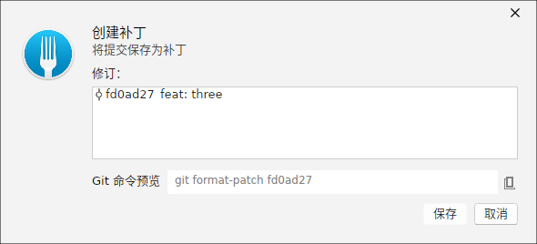
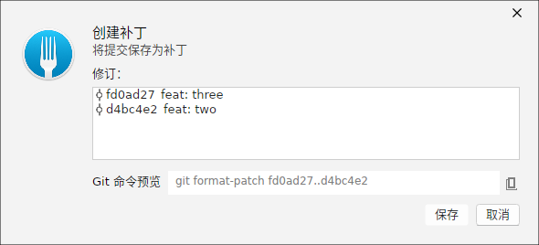
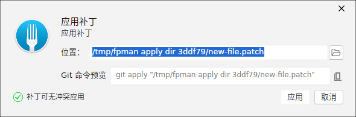
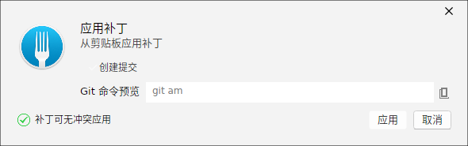
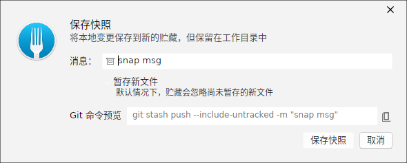

保存补丁：单个修订
「保存为补丁」对话框把一个或多个提交导出为 .patch 文件。选择单个修订后，revisions 列表装载出一条提交，勾选希望纳入的变更后即预览 git format-patch 风格的导出命令。

保存补丁：范围模式
当需要把一段连续的提交导出为补丁时，可指定范围（起始到当前），“revisions” 列表会装载范围内的全部提交，你可统一勾选后一次性导出，便于把一段功能迁移到其他仓库或分支。

应用补丁：从文件
「应用补丁」对话框从本地的 .patch 文件把改动应用到当前工作区。选择文件后，对话框会解析补丁内容并确认可应用，提交按钮随即启用，对应 git apply 命令。

应用补丁：从剪贴板
补丁也可以直接放在剪贴板中应用。选择「剪贴板」来源后，ForkPlus 读取剪贴板中的补丁文本。若勾选「创建提交」开关，则使用 git am 语义，把补丁作为完整提交应用到历史，而不仅写入工作区；命令预览随开关切换。

保存快照
「保存快照」对话框类似 Stash 的保存，但更强调“把当前改动整体留档”：输入描述消息并决定是否纳入新文件后，它能一键把工作区改动暂存归档，方便暂时离开当前上下文，之后随时恢复。

说明：补丁适合跨仓库/跨机器传递精确的改动（与 Stash 的“留在本仓库”不同）；快照则更贴近“本地临时存档”。需要回放历史或重新应用时，可配合「历史改写」的 Revert 与「Stash 贮藏」章节理解各自定位。